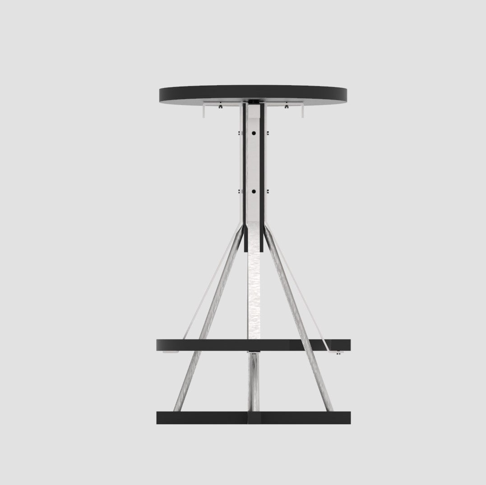
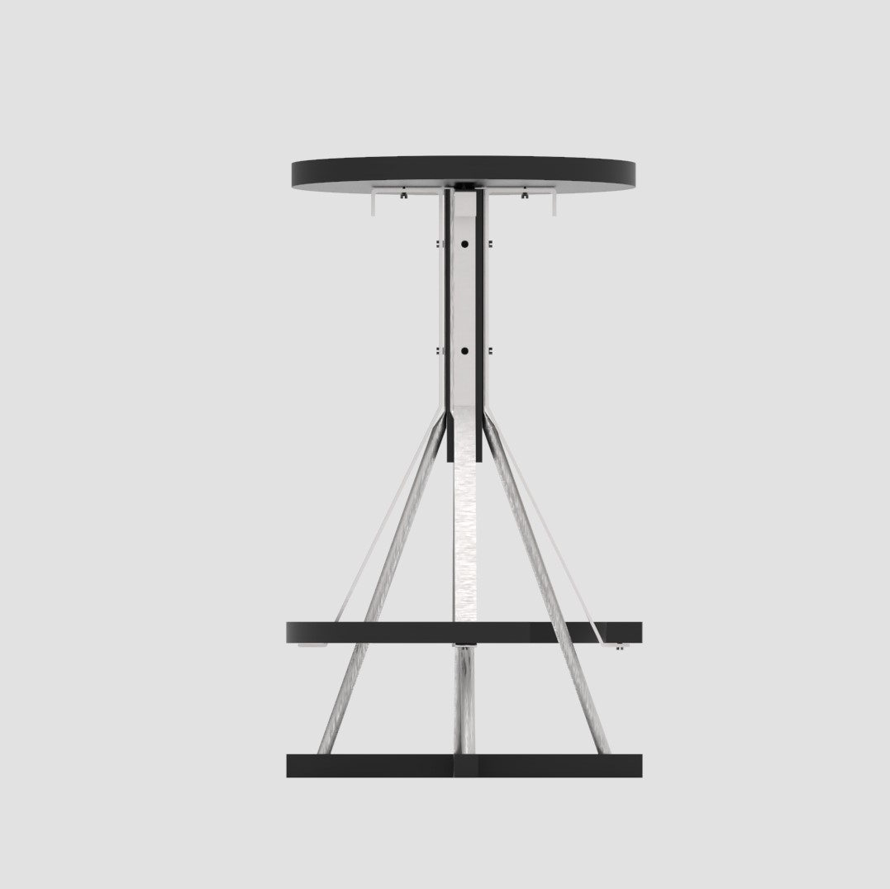
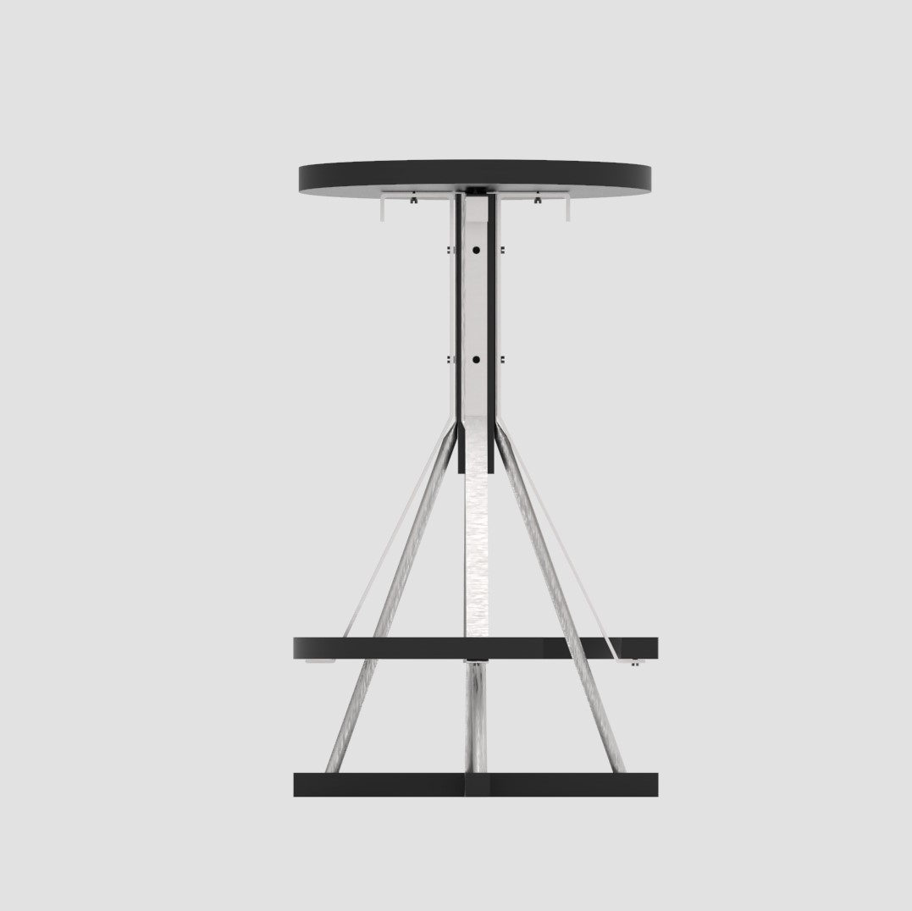

TOOSIE Stool
 

图西凳黑客自宜家的图西格衣架，把原本的衣架进行了消减，相当于换个角度地观察衣架使其变成了板凳。利用原本家具地支撑结构，外加的木板在整体形态上和原衣架一直，除了对称之外，木板和钢材的连接语言一致。
我理解黑客精神是转换一个角度去理解事物。板凳之所以会被人坐，就是因为他的高度合适。其他的家具，如果转换角度来看，让他们的高度，一样可以当作板凳来坐，所以利用宜家家具本身的支撑结构，将它改变角度后变成板凳。

图西凳黑客自宜家的图西格衣架，把原本的衣架进行了消减，相当于换个角度地观察衣架使其变成了板凳。利用原本家具地支撑结构，外加的木板在整体形态上和原衣架一直，除了对称之外，木板和钢材的连接语言一致。
我理解黑客精神是转换一个角度去理解事物。板凳之所以会被人坐，就是因为他的高度合适。其他的家具，如果转换角度来看，让他们的高度，一样可以当作板凳来坐，所以利用宜家家具本身的支撑结构，将它改变角度后变成板凳。